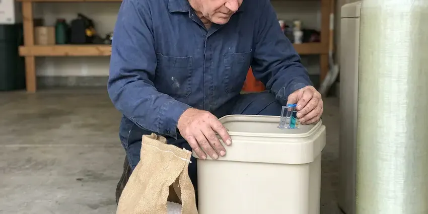
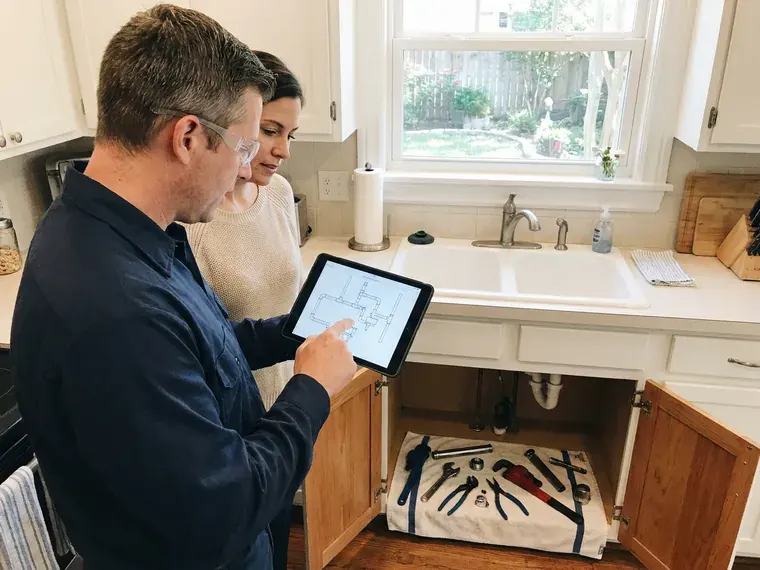
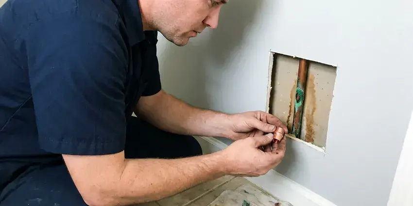
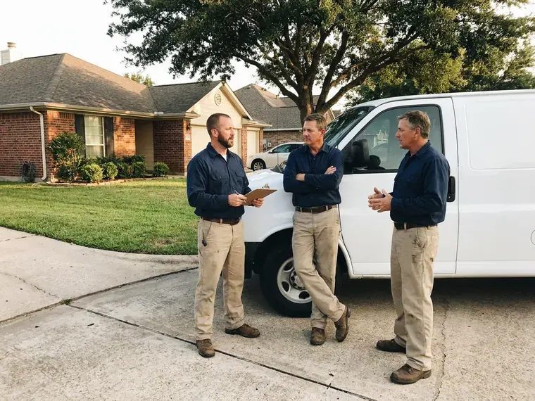
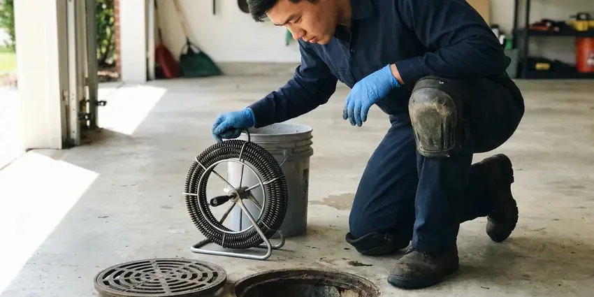
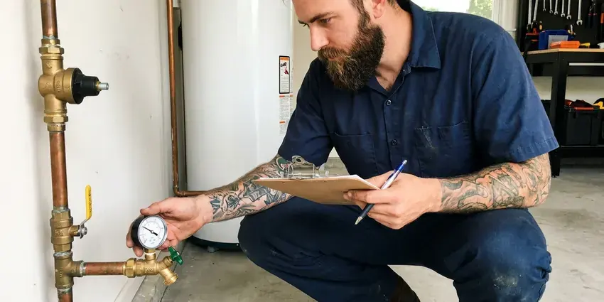

Well Pump Repair in Carson, NV
For reliable well pump repair in Carson, NV, look no further than FMR Plumbing. We restore your water supply quickly and efficiently.
- Pressure Tank Experts
- Upfront Pricing
- Quality Part Replacement
- Fast Well Pump Diagnostics
Dependable well pump repair that restores pressure in Carson, NV.
We bring pressure gauges, amp meters and common parts so most repairs finish in one visit.
Reliable Well Pump Repair in Carson, NV When Your Water Stops
At FMR Plumbing, we provide reliable well pump repair for homeowners in Carson, NV and the surrounding communities. Clay soils that swell when watered and shrink when dry can stress slabs and buried drain lines over time. We know that soil conditions and water table depths can impact well pump longevity, and our team is experienced in addressing these challenges to keep your system operating efficiently. We diagnose the root cause of the problem, whether it's electrical, mechanical, or related to water quality, and make lasting repairs.
Our expertise includes:
- Bladder pressure tank diagnosis, recharge and replacement
- Pressure Tank and Switch Testing
- Submersible and Jet Pump Repair

Additional Plumbing Repair Services in Carson, NV
We offer expert plumbing repair services across Carson, NV to stop leaks, clear blockages, and keep every fixture working the way it should.



Water Softener Repair near Carson



Customers
Why Choose FMR Plumbing for Well Pump Repair in Carson, NV?
Well problems can look alike from the faucet, but the cause might be a $40 switch or a pump hundreds of feet down. We test step by step so you only pay for what actually failed.
- Advanced Tools, We use modern diagnostic equipment to accurately pinpoint well pump problems, saving you time and money.
- Trained Technicians, Our plumbers are certified and routinely trained on current well pump technologies and repair techniques.
- Local Knowledge, We understand Nevada water conditions and well system requirements, especially in Carson.
Citywide Coverage
FMR Plumbing is proud to serve every neighborhood and surrounding area of Carson for well pump repair. Whether you're in a newly developed subdivision or a more established rural property, our team is familiar with the diverse well system installations across the region. We prioritize fast response times to minimize any disruption to your water supply.
Experienced Team
The FMR Plumbing team brings years of focused knowledge to every well pump repair job. Their expertise means that whether you have a deep well or a shallow well system, the repair is performed correctly and reliably.
Safety-First Approach
Safety is paramount in all our well pump repair work. Our technicians adhere strictly to all local and state plumbing codes in Nevada, ensuring that every repair is not only effective but also compliant and safe. We take precautions to protect your property and ensure the proper functioning of electrical components associated with your well pump system.
Trusted Certified Carson Plumbing Services Professionals
At FMR Plumbing, we take pride in providing licensed, certified plumbing services throughout Carson, NV. Backed by leading industry credentials, our experienced plumbers combine technical skill with genuine customer care. Whether it is repair, installation, or maintenance, we follow strict safety and quality standards to deliver long-lasting results you can trust.
Call Us Now PHCC Plumbing Contractor Recognition
PHCC Plumbing Contractor Recognition Better Business Bureau (BBB) Accreditation
Better Business Bureau (BBB) Accreditation Angi Certified Pro
Angi Certified Pro ISO 9001 Quality Management Certification
ISO 9001 Quality Management CertificationTrusted Well Pump Repair Services in Carson, NV
Well Pump Electrical Troubleshooting in Carson, NV
Many well pump issues come from electrical problems, including tripped circuit breakers, faulty wiring, or a malfunctioning control box. These can prevent the pump from starting or cause it to run erratically. Our licensed plumbers are also adept at electrical diagnostics, safely testing circuits, relays, and capacitors to identify and repair electrical faults. We ensure all wiring and connections meet Nevada electrical codes, providing a safe and reliable power supply to your well pump.

Well Pump Maintenance & Repair Cost Comparison in Carson, NV
Investing in regular well pump maintenance can frequently prevent costly emergency repairs. While an average well pump repair in Carson might range from $400 to $1,500 depending on the complexity and parts needed, preventive checks are typically much less. FMR Plumbing provides clear, upfront pricing for both repair and maintenance services, helping you make informed decisions to optimize your well system's longevity and performance.
Well Pump Diagnostic Services in Carson, NV
Accurate diagnosis is the first step to an effective well pump repair. We use dedicated tools to test voltage, amperage, pressure, and flow rates to pinpoint the exact cause of your well pump problem. Whether it's a weak motor, a clogged intake, or an issue with the well itself, our thorough diagnostic process in Carson means we address the root cause, not just the symptoms, saving you time and money.
Well Pressure Tank Repair in Carson
The pressure tank works with your well pump to maintain consistent water pressure and reduce pump cycling. Issues like a waterlogged tank, sudden pressure drops, or continuous pump operation often point to a faulty pressure tank. We inspect the air bladder, pressure switch, and tank connections to find the problem. In Carson, we repair or replace tanks to optimize your well system's performance and extend pump life.
Control Box and Electrical Repair in Carson, NV
Three-wire submersible pumps rely on a control box with a start capacitor and relay. Drought is the long-term concern in Nevada, and water conservation rules shape everything from fixtures to irrigation. Lightning and power surges often damage these components. We test capacitors, relays and overload protection and replace failed parts. A surge protector at the control box can help prevent repeat failures.
Pressure Switch Replacement in Carson
The pressure switch tells the pump when to start and stop. Pitted contacts, clogged sensing tubes and insect damage are frequent causes of failure. We replace the switch, clean or replace the tube and set the cut-in and cut-out pressures to match your tank. This is one of the most affordable well repairs.
Well Pump Control Box & Electrical Repair in Carson, NV
Many well pump failures trace back to electrical issues within the control box or wiring. This can include tripped breakers, faulty capacitors, or corroded connections. Our licensed technicians are trained to safely diagnose and repair these complex electrical components. We make sure all wiring meets Nevada electrical codes, preventing hazards and ensuring reliable pump operation in Carson homes.

Well Pump Pressure Tank Issues in Carson
The pressure tank works together with your well pump to maintain consistent water pressure and reduce pump cycling. A waterlogged tank, a ruptured diaphragm, or a faulty air valve can cause rapid pump cycling, fluctuating water pressure, or even no water at all. Our team accurately diagnoses pressure tank problems and performs necessary repairs or replacements. We ensure your tank is properly sized and charged for optimal system performance in Carson.
Well Pump Repair Near Me in Carson, NV
Local knowledge helps with wells because water levels, sand content and mineral scale vary from one area to the next. Our technicians have seen what works in the wells around town. That experience leads to better pump choices and extended service life.
Don't search endlessly for well pump repair near me when you're facing a water emergency. FMR Plumbing is deeply rooted in the Carson community and committed to providing prompt, professional service. We understand the urgency of well pump failures and strive to be the fastest, most reliable option for homeowners in Carson.
FMR Plumbing at a Glance
- Fully licensed plumbing team covering Carson, NV
- 24/7 emergency service with same-day scheduling
- Clear written estimates, no hidden fees
- 4.8-star rated by 903+ Nevada customers
Carson Map
Carson Information
- Population
- 58,036
- Area codes
- Local
- Service area
- Carson and communities within 40 miles
- Nearby
- Reno, Sparks, Sun Valley, Fernley
Drought is the long-term concern in Nevada, and water conservation rules shape everything from fixtures to irrigation. Homes on private wells around Carson, NV depend on pumps that face sand, mineral scale and power surges, so fast well pump repair keeps a household from going without water.
Expert Services
Trust our professionals for reliable FMR Plumbing solutions in Carson, NV.
Our Specialized Plumbing Services in Carson, NV
At FMR Plumbing, we provide a complete range of plumbing services across Carson, NV. From leak detection to full system installations, our team ensures fast, precise, and affordable service for both residential and commercial properties. Explore our core services below:



Professional drain services, Carson

Plumbing Maintenance near Carson
How Our Well Pump Repair Process Works in Carson, NV
At FMR Plumbing, we follow a clear, step-by-step approach to well pump repair, from initial diagnosis to final testing.
Request a Quote
Contact FMR Plumbing by calling (725) 360-1766 to schedule your well pump repair service. Our helpful dispatch team will gather information about your issue and set up a convenient appointment time.
On-Site Diagnosis
A certified technician will arrive at your Carson home to carefully inspect your well pump system. We use advanced diagnostic tools to pinpoint the exact cause of the malfunction.
Expert Repair
Once the problem is identified, our technician will explain the necessary repairs and provide a clear, upfront estimate. With your approval, we'll proceed with the repair using high-quality parts.
Frequently Asked Questions About Well Pump Repair in Carson
Minor repairs like a pressure switch or capacitor typically cost $150 to $500. Pressure tank replacement often runs $600 to $1,500, and replacing a deep submersible pump can range from $1,800 to $5,000 or more. We quote the price before starting work.
Yes, FMR Plumbing stands behind its work. We offer warranties on both parts and labor for our well pump repairs. Specific warranty details will be provided with your estimate, so you can feel confident about the longevity of our service.
Minor well pump repairs, such as replacing a pressure switch or capacitor, usually do not require a permit in Nevada. However, significant alterations to the well, such as drilling a new well or replacing the entire pump and wellhead assembly, often do. Plumbing contractors must be licensed by the state contractors board, and the state treats unlicensed work seriously. Our team in Carson can advise you on any necessary permitting requirements for your specific repair.
Yes. Lightning can damage control boxes, capacitors, pressure switches and pump motors. Drought is the long-term concern in Nevada, and water conservation rules shape everything from fixtures to irrigation. A well surge arrestor can reduce the risk.
FMR Plumbing services all major well pump brands, including but not limited to Goulds, Grundfos, Franklin Electric, Myers, and Sta-Rite. Our technicians are trained and equipped to work on a wide variety of models and system types.
For most standard well pump repairs, a permit is typically not required in Carson, NV. However, for major replacements or new installations, permits may be necessary to ensure compliance with local plumbing and electrical codes. We will let you know if a permit is needed for your specific situation.
Common signs include no water, low water pressure, intermittent water flow, strange noises coming from the pump or pressure tank, cloudy or rusty water, or your pump running constantly. If you notice any of these symptoms in your Carson home, it's best to call a professional quickly.
Improving well water pressure can involve a few solutions, such as adjusting the pressure switch settings, checking for clogs in the piping, or ensuring your pressure tank is functioning correctly. In some cases, a booster pump or a larger well pump might be necessary. Our Carson experts can assess your system and recommend the right fix.
What People Are Saying About Our Plumbing Experts?

Daniel K.
A pipe burst at 11 pm and they actually answered. The plumber showed up within the hour, shut everything down, and had us back to normal the next morning. Could not ask for more.
Emergency Plumbing · Elko, NV
Emily R.
I called FMR Plumbing for plumbing repair, and the technician was fast, polite, and thorough. They explained the problem clearly and fixed it the same day. I will definitely hire them again. Highly recommended!
Plumbing Repair · Sun Valley, NV
Robert G.
The trenchless sewer replacement saved our front yard. They walked us through the camera inspection footage first so we knew exactly what we were paying for.
Sewer Line Replacement · Pahrump, NV
Mark T.
When our office needed drain cleaning, FMR Plumbing provided quick, reliable service. The plumber arrived on time and made sure every drain flowed perfectly before leaving. Very satisfied.
Drain Cleaning · Pahrump, NVPatricia H.
We had a slab leak that two other companies could not find. FMR Plumbing located it in under an hour, explained our options, and the price matched the quote to the dollar.
Slab Leak Repair · Fernley, NVJames P.
Our commercial plumbing system had a leak under the sink, and FMR Plumbing handled it professionally. The plumbers arrived quickly and restored everything without disruption to our customers.
Commercial Plumbing · Carson, NV